Project 3: (Auto)stitching and Photo Mosaics
[View Assignment]Part A: Image Warping and Mosaicing
A.1: Shoot the Pictures
These are the sets of photos I took that I will be using to warp and stitch together into a mosaic (panorama).
Doe Library
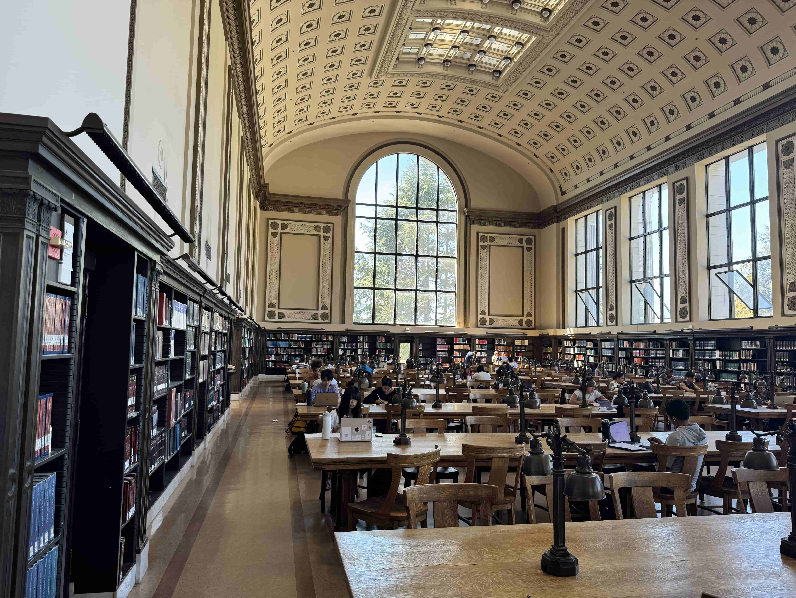
Left
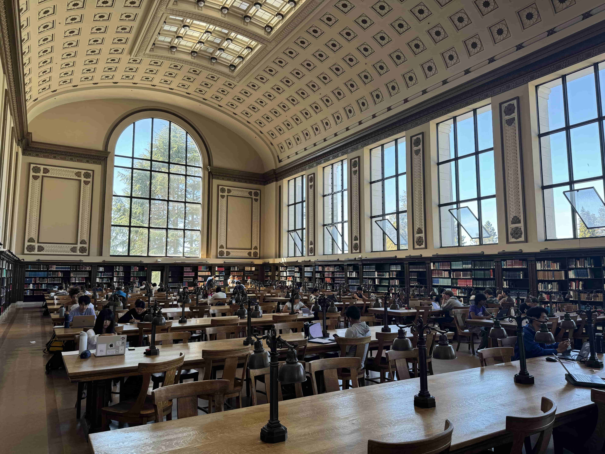
Center (reference)
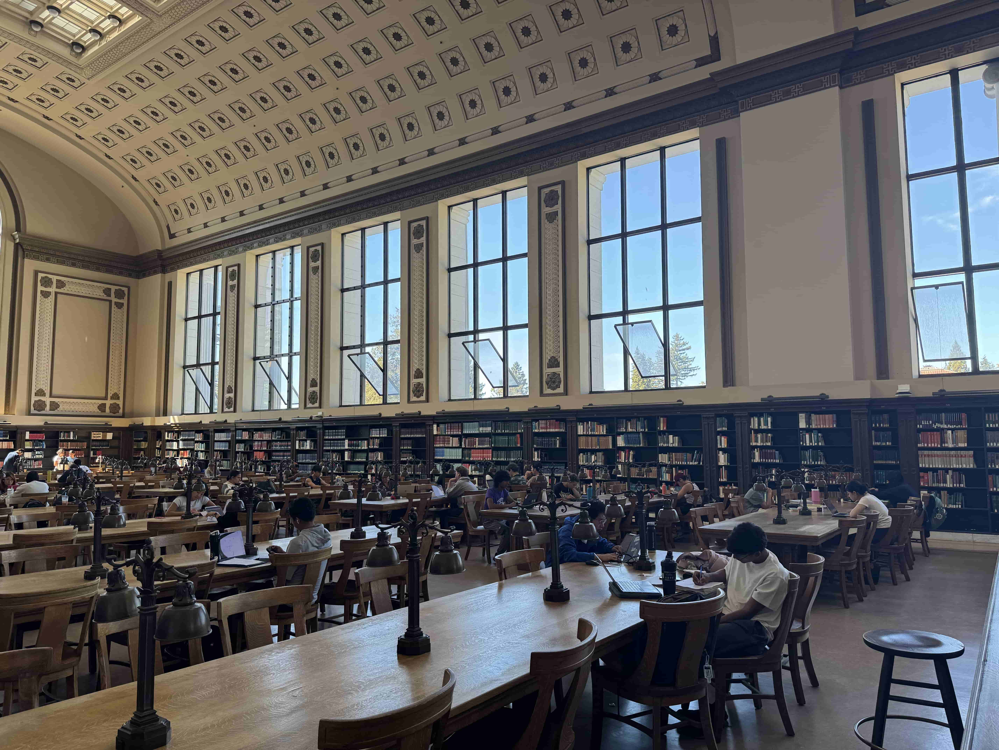
Right
Gilman Hall
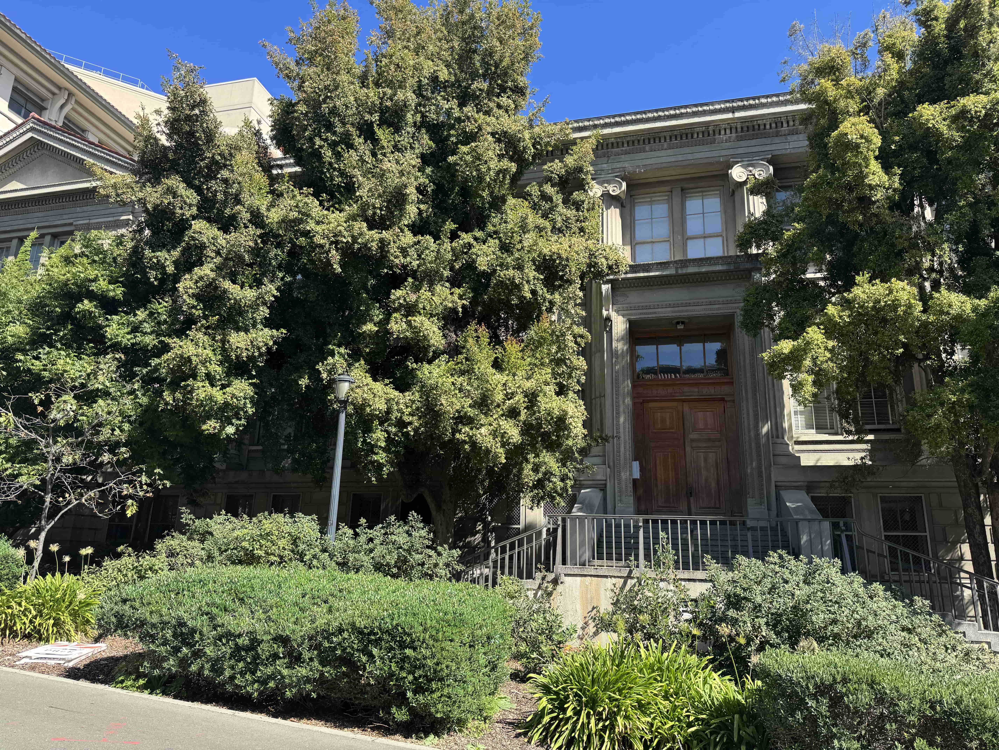
Left
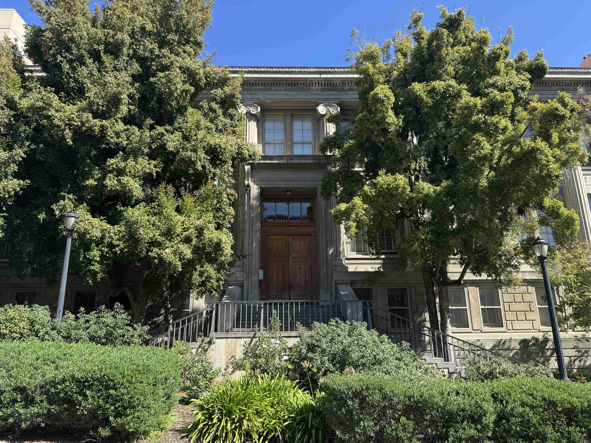
Center (reference)
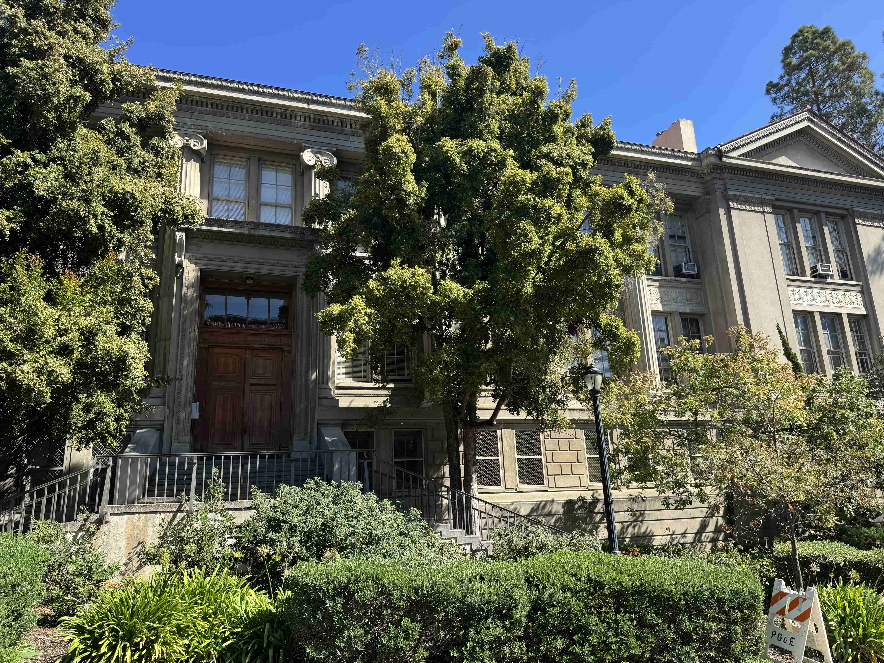
Right
Strawberry Creek
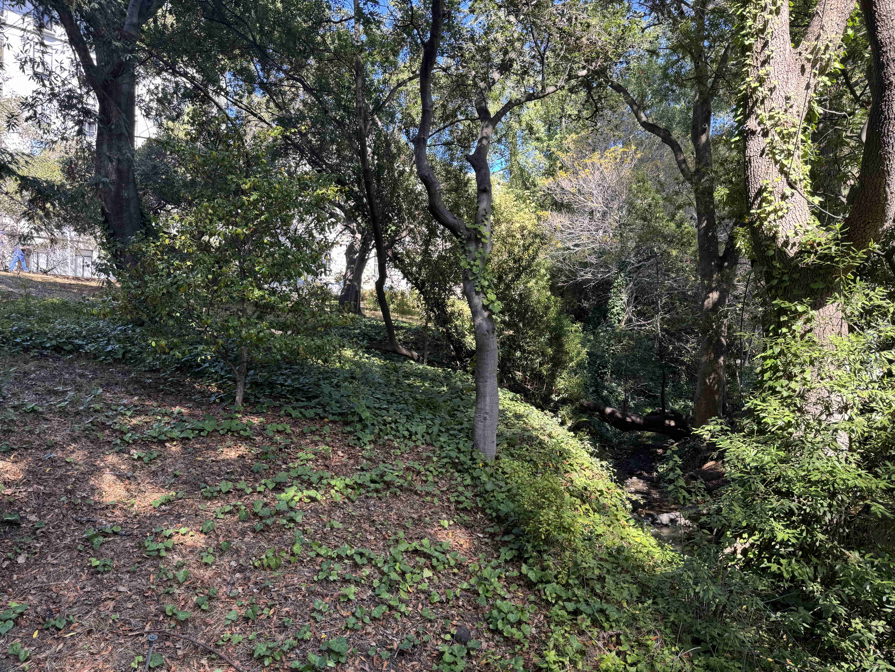
Left
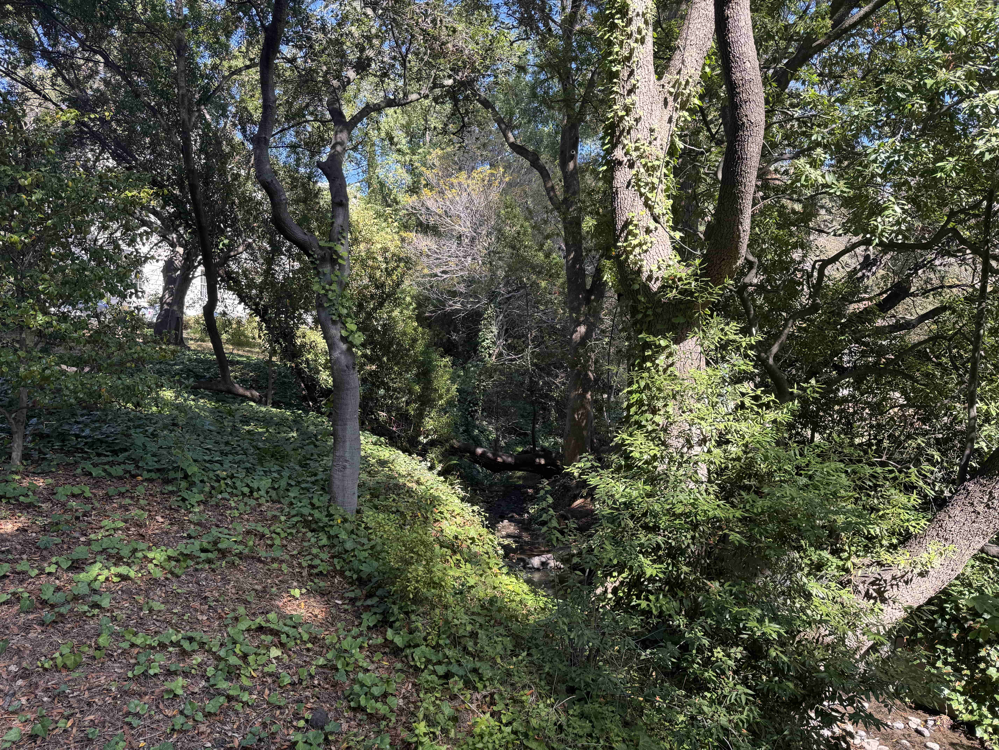
Center (reference)
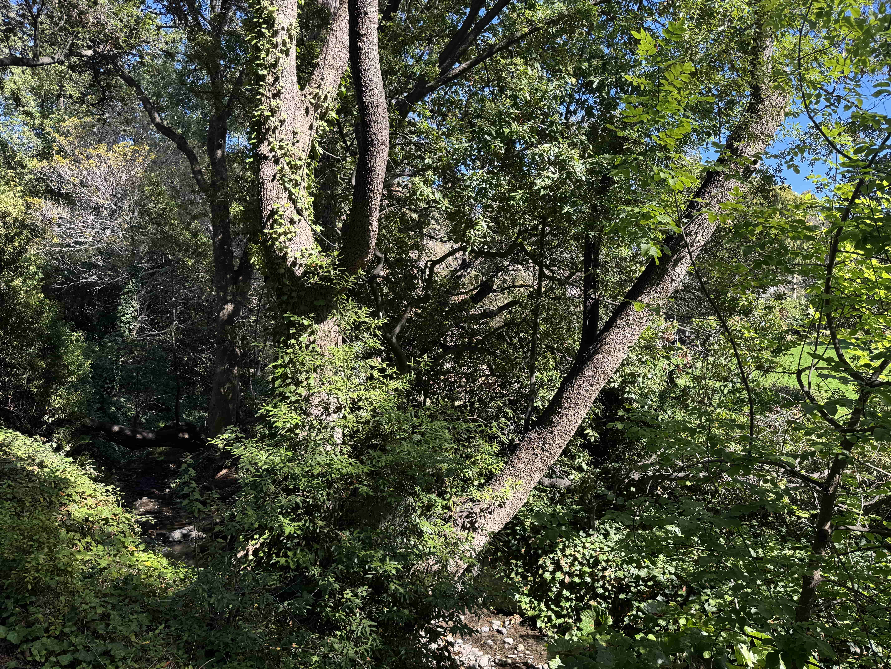
Right
A.2: Recover Homographies
Using numpy.linalg.lstsq, I will frame the homography transformation \(p' = Hp\) as a Least Squares problem \(Ah = b\) to solve for \(h\), the flatten version of the homography matrix \(H\). This will allow to recover the parameters of the projection between pairs of images to warp them into alignment.
def computeH(im1_pts, im2_pts):
n = im1_pts.shape[0]
A = []
b = []
for i in range(n):
x, y = im1_pts[i]
u, v = im2_pts[i]
A.append([x, y, 1, 0, 0, 0, -u*x, -u*y])
A.append([0, 0, 0, x, y, 1, -v*x, -v*y])
b.append(u)
b.append(v)
A = np.array(A)
b = np.array(b)
h = np.linalg.lstsq(A, b)[0]
h = np.append(h, 1)
H = h.reshape(3, 3)
return H
Here are the 10 point correspondences used to compute the homographies for each set of photos:
Doe Library
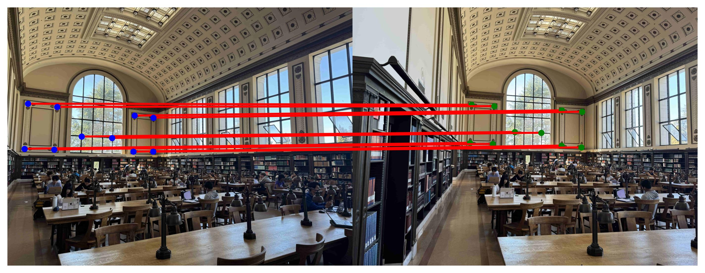
Center to Left correspondences
This is the system of equations and the recovered matrix \(H\) for the Center to Left homography:
A = [[ 1.96879545e+03 1.61527273e+03 1.00000000e+00 0.00000000e+00
0.00000000e+00 0.00000000e+00 -6.69927399e+05 -5.49633256e+05]
[ 0.00000000e+00 0.00000000e+00 0.00000000e+00 1.96879545e+03
1.61527273e+03 1.00000000e+00 -3.14591141e+06 -2.58102226e+06]
[ 2.34550000e+03 1.63845455e+03 1.00000000e+00 0.00000000e+00
0.00000000e+00 0.00000000e+00 -1.92634849e+06 -1.34565527e+06]
[ 0.00000000e+00 0.00000000e+00 0.00000000e+00 2.34550000e+03
1.63845455e+03 1.00000000e+00 -3.87018161e+06 -2.70352448e+06]
[ 1.94561364e+03 2.24697727e+03 1.00000000e+00 0.00000000e+00
0.00000000e+00 0.00000000e+00 -5.49282104e+05 -6.34362538e+05]
[ 0.00000000e+00 0.00000000e+00 0.00000000e+00 1.94561364e+03
2.24697727e+03 1.00000000e+00 -4.56343678e+06 -5.27028519e+06]
[ 2.32231818e+03 2.26436364e+03 1.00000000e+00 0.00000000e+00
0.00000000e+00 0.00000000e+00 -1.79963825e+06 -1.75472743e+06]
[ 0.00000000e+00 0.00000000e+00 0.00000000e+00 2.32231818e+03
2.26436364e+03 1.00000000e+00 -5.47391507e+06 -5.33731094e+06]
[ 2.68743182e+03 2.06731818e+03 1.00000000e+00 0.00000000e+00
0.00000000e+00 0.00000000e+00 -3.29741776e+06 -2.53655242e+06]
[ 0.00000000e+00 0.00000000e+00 0.00000000e+00 2.68743182e+03
2.06731818e+03 1.00000000e+00 -5.75825022e+06 -4.42955810e+06]
[ 3.12209091e+03 2.07890909e+03 1.00000000e+00 0.00000000e+00
0.00000000e+00 0.00000000e+00 -5.40490702e+06 -3.59896962e+06]
[ 0.00000000e+00 0.00000000e+00 0.00000000e+00 3.12209091e+03
2.07890909e+03 1.00000000e+00 -6.76195221e+06 -4.50258636e+06]
[ 3.46402273e+03 1.70800000e+03 1.00000000e+00 0.00000000e+00
0.00000000e+00 0.00000000e+00 -7.28169068e+06 -3.59037127e+06]
[ 0.00000000e+00 0.00000000e+00 0.00000000e+00 3.46402273e+03
1.70800000e+03 1.00000000e+00 -6.21768461e+06 -3.06574355e+06]
[ 3.80015909e+03 1.73118182e+03 1.00000000e+00 0.00000000e+00
0.00000000e+00 0.00000000e+00 -9.17755694e+06 -4.18088278e+06]
[ 0.00000000e+00 0.00000000e+00 0.00000000e+00 3.80015909e+03
1.73118182e+03 1.00000000e+00 -6.95316836e+06 -3.16755124e+06]
[ 3.45822727e+03 2.29334091e+03 1.00000000e+00 0.00000000e+00
0.00000000e+00 0.00000000e+00 -7.20938211e+06 -4.78093822e+06]
[ 0.00000000e+00 0.00000000e+00 0.00000000e+00 3.45822727e+03
2.29334091e+03 1.00000000e+00 -8.27160806e+06 -5.48535873e+06]
[ 3.78856818e+03 2.32231818e+03 1.00000000e+00 0.00000000e+00
0.00000000e+00 0.00000000e+00 -9.12760789e+06 -5.59504508e+06]
[ 0.00000000e+00 0.00000000e+00 0.00000000e+00 3.78856818e+03
2.32231818e+03 1.00000000e+00 -9.06173847e+06 -5.55466841e+06]]
b = [ 340.27272727
1597.88636364
821.29545455
1650.04545455
282.31818182
2345.5
774.93181818
2357.09090909
1226.97727273
2142.65909091
1731.18181818
2165.84090909
2102.09090909
1794.93181818
2415.04545455
1829.70454545
2084.70454545
2391.86363636
2409.25
2391.86363636 ]
H = [[ 1.70181019e+00 -6.04546793e-02 -2.84421631e+03]
[ 2.99355910e-01 1.36438798e+00 -8.43479887e+02]
[ 1.30558184e-04 -2.49914705e-05 1.00000000e+00]]
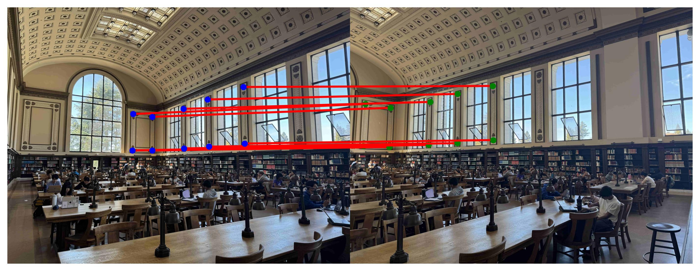
Center to Right correspondences
And this is the system of equations and recovered matrix \(H\) for the Center to Right homography:
A = [[ 2.59136364e+02 1.61527273e+03 1.00000000e+00 0.00000000e+00
0.00000000e+00 0.00000000e+00 -5.43226381e+05 -3.38608888e+06]
[ 0.00000000e+00 0.00000000e+00 0.00000000e+00 2.59136364e+02
1.61527273e+03 1.00000000e+00 -4.62128478e+05 -2.88058193e+06]
[ 6.76409091e+02 1.67902273e+03 1.00000000e+00 0.00000000e+00
0.00000000e+00 0.00000000e+00 -1.63355870e+06 -4.05491621e+06]
[ 0.00000000e+00 0.00000000e+00 0.00000000e+00 6.76409091e+02
1.67902273e+03 1.00000000e+00 -1.23762879e+06 -3.07211552e+06]
[ 2.18568182e+02 2.31652273e+03 1.00000000e+00 0.00000000e+00
0.00000000e+00 0.00000000e+00 -4.55650082e+05 -4.82926546e+06]
[ 0.00000000e+00 0.00000000e+00 0.00000000e+00 2.18568182e+02
2.31652273e+03 1.00000000e+00 -5.22785286e+05 -5.54080647e+06]
[ 6.53227273e+02 2.33390909e+03 1.00000000e+00 0.00000000e+00
0.00000000e+00 0.00000000e+00 -1.57757356e+06 -5.63649654e+06]
[ 0.00000000e+00 0.00000000e+00 0.00000000e+00 6.53227273e+02
2.33390909e+03 1.00000000e+00 -1.56243056e+06 -5.58239229e+06]
[ 1.33709091e+03 1.58050000e+03 1.00000000e+00 0.00000000e+00
0.00000000e+00 0.00000000e+00 -3.92654979e+06 -4.64135377e+06]
[ 0.00000000e+00 0.00000000e+00 0.00000000e+00 1.33709091e+03
1.58050000e+03 1.00000000e+00 -2.26825317e+06 -2.68117457e+06]
[ 1.30811364e+03 2.29913636e+03 1.00000000e+00 0.00000000e+00
0.00000000e+00 0.00000000e+00 -3.84903519e+06 -6.76505199e+06]
[ 0.00000000e+00 0.00000000e+00 0.00000000e+00 1.30811364e+03
2.29913636e+03 1.00000000e+00 -3.08334276e+06 -5.41927342e+06]
[ 1.79493182e+03 1.44720455e+03 1.00000000e+00 0.00000000e+00
0.00000000e+00 0.00000000e+00 -5.98883081e+06 -4.82863086e+06]
[ 0.00000000e+00 0.00000000e+00 0.00000000e+00 1.79493182e+03
1.44720455e+03 1.00000000e+00 -2.76407262e+06 -2.22859633e+06]
[ 1.78913636e+03 2.27015909e+03 1.00000000e+00 0.00000000e+00
0.00000000e+00 0.00000000e+00 -6.01096957e+06 -7.62706382e+06]
[ 0.00000000e+00 0.00000000e+00 0.00000000e+00 1.78913636e+03
2.27015909e+03 1.00000000e+00 -4.16531277e+06 -5.28518834e+06]
[ 2.38027273e+03 1.31390909e+03 1.00000000e+00 0.00000000e+00
0.00000000e+00 0.00000000e+00 -9.36269458e+06 -5.16820169e+06]
[ 0.00000000e+00 0.00000000e+00 0.00000000e+00 2.38027273e+03
1.31390909e+03 1.00000000e+00 -3.16884626e+06 -1.74920120e+06]
[ 2.38606818e+03 2.21800000e+03 1.00000000e+00 0.00000000e+00
0.00000000e+00 0.00000000e+00 -9.44080413e+06 -8.77581945e+06]
[ 0.00000000e+00 0.00000000e+00 0.00000000e+00 2.38606818e+03
2.21800000e+03 1.00000000e+00 -5.43058272e+06 -5.04806718e+06]]
b = [ 2096.29545455
1783.34090909
2415.04545455
1829.70454545
2084.70454545
2391.86363636
2415.04545455
2391.86363636
2936.63636364
1696.40909091
2942.43181818
2357.09090909
3336.52272727
1539.93181818
3359.70454545
2328.11363636
3933.45454545
1331.29545455
3956.63636364
2275.95454545 ]
H = [[ 5.25639246e-01 4.49877933e-02 1.86352493e+03]
[-2.04188968e-01 8.48190593e-01 4.53081012e+02]
[-8.38948194e-05 6.03728562e-06 1.00000000e+00]]
Gilman Hall
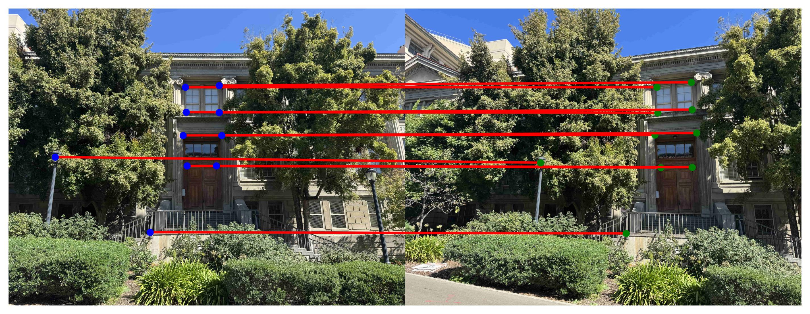
Center to Left correspondences
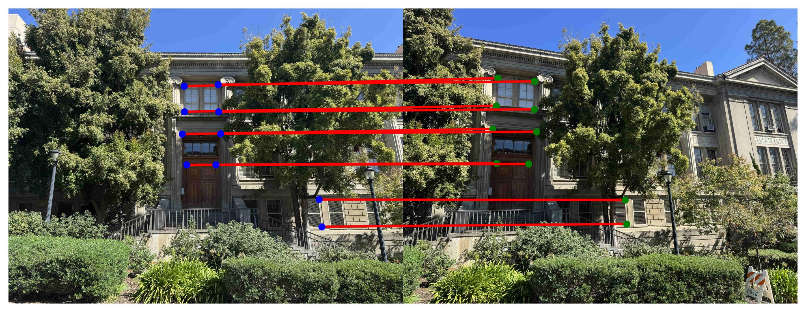
Center to Right correspondences
Strawberry Creek
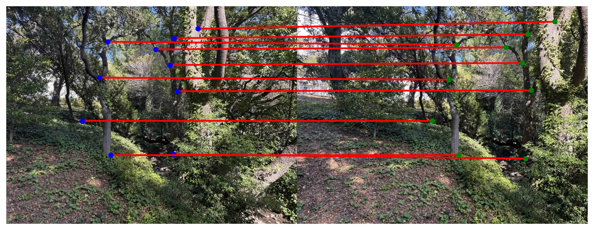
Center to Left correspondences
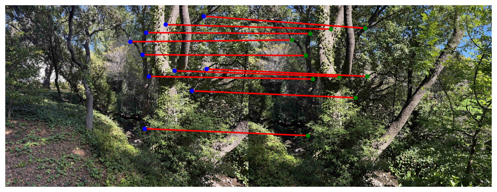
Center to Right correspondences
A.3: Warp the Images
Using the recovered homographies from A.2, I implemented two interpolation methods to warp the images:
def warpImageNearestNeighbor(im, H):
h, w, _ = im.shape
H_inv = np.linalg.inv(H)
# compute output bounds
min_x, min_y, max_x, max_y = computeImageBounds(im, H)
out_w, out_h = int(np.ceil(max_x - min_x)), int(np.ceil(max_y - min_y))
# create grid of (x, y) coordinates in output
x_coords, y_coords = np.meshgrid(np.arange(out_w), np.arange(out_h))
x_flat = x_coords.flatten() + min_x
y_flat = y_coords.flatten() + min_y
ones = np.ones_like(x_flat)
pts_out = np.stack([x_flat, y_flat, ones], axis=0)
# inverse warp to input coordinates
pts_in = H_inv @ pts_out
pts_in /= pts_in[2, :]
# NN interpolation
x_in = np.round(pts_in[0, :]).astype(int)
y_in = np.round(pts_in[1, :]).astype(int)
# mask valid points (within image bounds)
valid = (x_in >= 0) & (x_in <= w) & (y_in >= 0) & (y_in <= h)
warped_im = np.zeros((out_h, out_w, 3), dtype=np.float64)
warped_im.reshape(-1, 3)[valid] = im[y_in[valid], x_in[valid]]
return warped_im
def warpImageBilinear(im, H):
h, w, _ = im.shape
H_inv = np.linalg.inv(H)
# compute output bounds
min_x, min_y, max_x, max_y = computeImageBounds(im, H)
out_w, out_h = int(np.ceil(max_x - min_x)), int(np.ceil(max_y - min_y))
# create grid of (x, y) coordinates in output
x_coords, y_coords = np.meshgrid(np.arange(out_w), np.arange(out_h))
x_flat = x_coords.flatten() + min_x
y_flat = y_coords.flatten() + min_y
ones = np.ones_like(x_flat)
pts_out = np.stack([x_flat, y_flat, ones], axis=0)
# inverse warp to input coordinates
pts_in = H_inv @ pts_out
pts_in /= pts_in[2, :]
x = pts_in[0, :]
y = pts_in[1, :]
# mask valid points (within image bounds)
valid = (x >= 0) & (x < w-1) & (y >= 0) & (y < h-1)
# compute valid points
x0 = np.floor(x[valid]).astype(int)
y0 = np.floor(y[valid]).astype(int)
x1 = x0 + 1
y1 = y0 + 1
dx = x[valid] - x0
dy = y[valid] - y0
# bilinear interpolation (for all channels)
top = (1 - dx)[:, None] * im[y0, x0] + dx[:, None] * im[y0, x1]
bottom = (1 - dx)[:, None] * im[y1, x0] + dx[:, None] * im[y1, x1]
warped_vals = (1 - dy)[:, None] * top + dy[:, None] * bottom
warped_im = np.zeros((out_h, out_w, 3), dtype=np.float64)
warped_im.reshape(-1, 3)[valid] = warped_vals
return warped_im
Note computeImageBounds returns the minimum and maximum values of the height and width of the input image to obtain the dimensions of the warped image.
Here are the results of warping the images using both interpolation methods along with the time taken for each method:
JoJo's Bizarre Adventure
I defined the correspondences for this image using the bottom painting of the photo to compute \(H\).
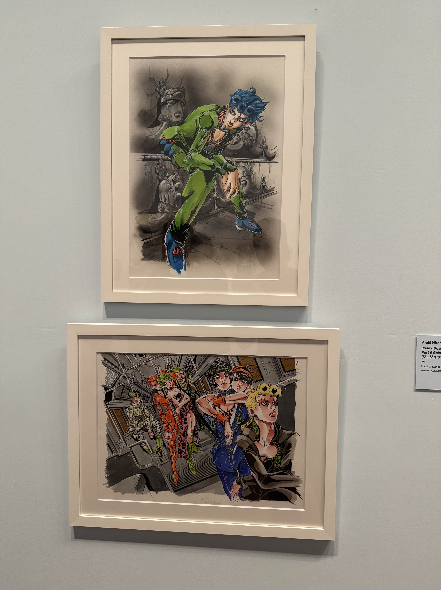
Original
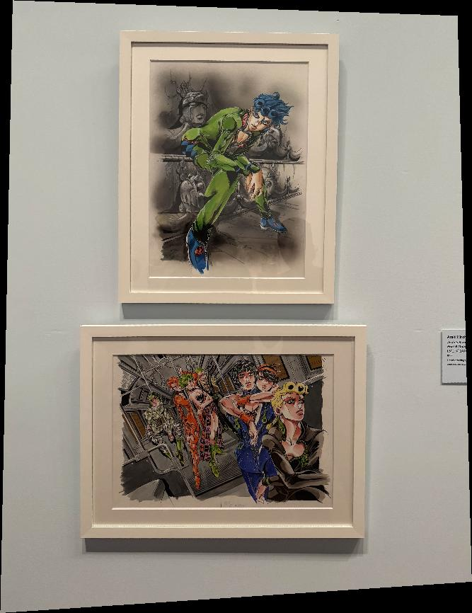
Nearest Neighbor Interpolation
(0.12 second)
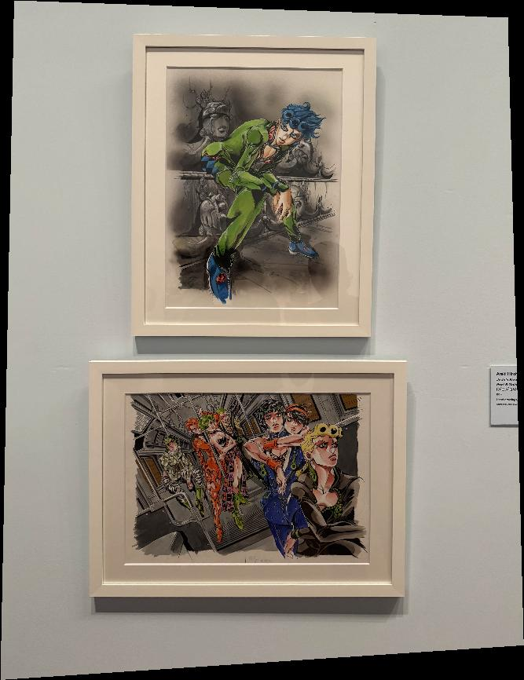
Bilinear Interpolation
(1.87 seconds)
Doe Library
Original
Nearest Neighbor Interpolation
(57.88 seconds)
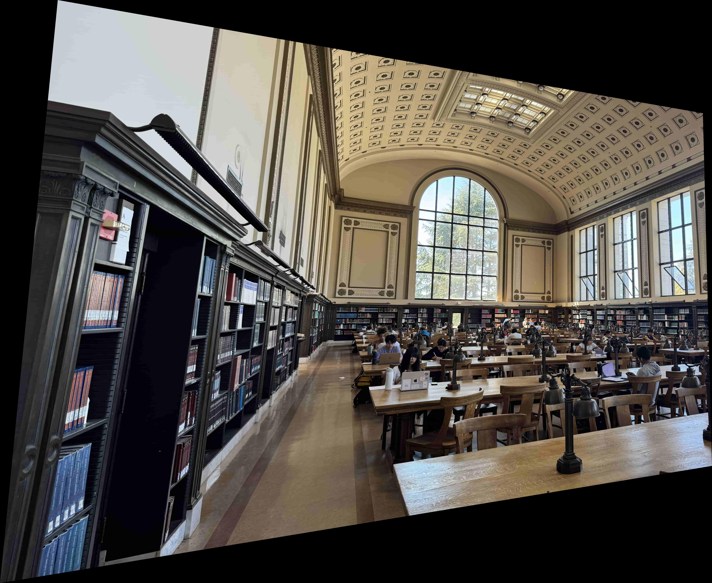
Bilinear Interpolation
(154.19 seconds)
Original
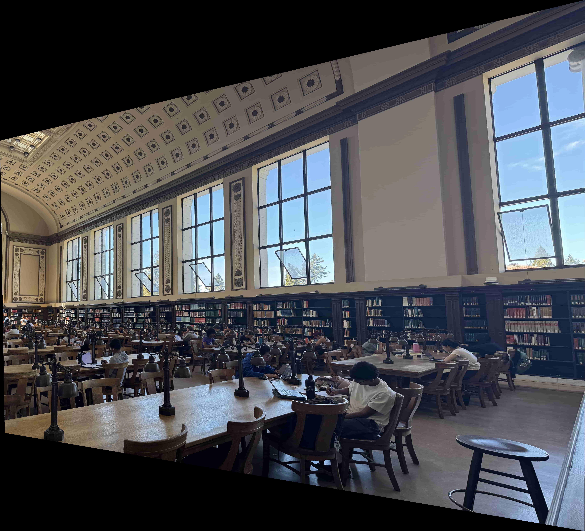
Nearest Neighbor Interpolation
(25.56 seconds)
Bilinear Interpolation
(99.78 seconds)
Gilman Hall
Original
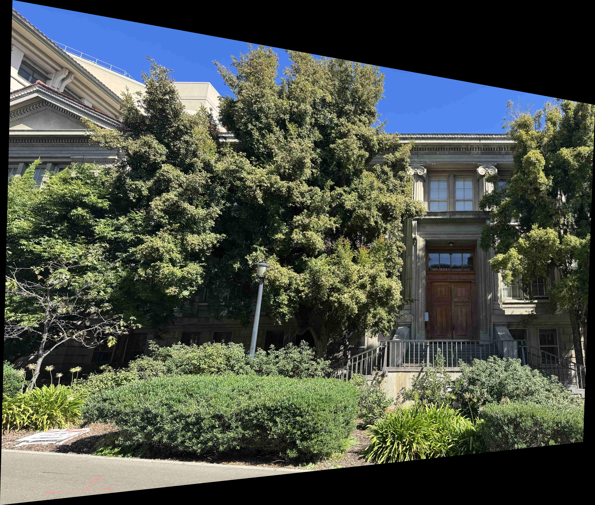
Nearest Neighbor Interpolation
(18.99 seconds)
Bilinear Interpolation
(50.17 seconds)
Original
Nearest Neighbor Interpolation
(19.54 seconds)
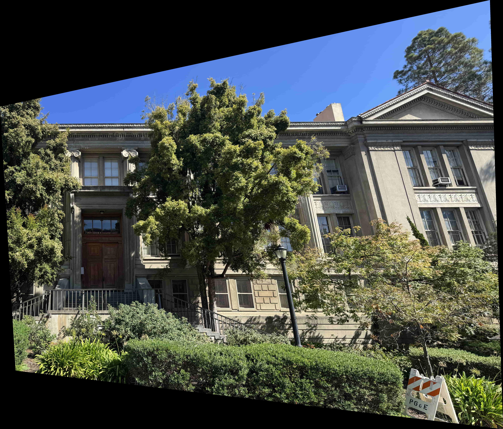
Bilinear Interpolation
(58.69 seconds)
Strawberry Creek
Original
Nearest Neighbor Interpolation
(21.79 seconds)
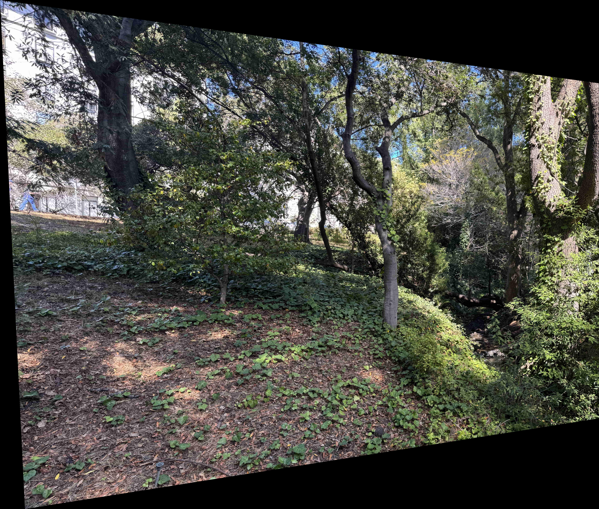
Bilinear Interpolation
(60.63 seconds)
Original

Nearest Neighbor Interpolation
(73.34 seconds)

Bilinear Interpolation
(161.15 seconds)
From my results, using Nearest Neighbor Interpolation was at least 2x faster without surprisingly compromising much quality compared to Bilinear Interpolation from a reasonable distance. This time difference is because for Bilinear Interpolation, you need to compute the weighted average of the neighboring pixels, whereas you can just round to the nearest pixel value in Nearest Neighbor.
In theory, Bilinear Interpolation produces smoother results and better preserves fine detail, but is slower due to the additional computations. In contrast, Nearest Neighbor Interpolation simply uses the nearest integer pixel value, which makes it faster but at the cost of image smoothness and finer detail.
A.4: Blend the Images into a Mosaic
I used Nearest Neighbor interpolation for image warping to project each image into the coordinate frame of the center view. After computing the mosaic bounds, I created a black canvas and placed each warped image into its proper position using its calculated offset. Each image was also assigned a binary alpha mask indicating valid pixel regions.
Originally, I stitched the images together without blending by using a simple binary mask. So to blend the images, I implemented a multi-resolution 2-level Laplacian stack blending approach (use my code from Project 2). The images and their masks were downsampled to reduce computation time, and the masks were softened with Gaussian blurring to create smooth transition weights. I then blended the left and center mosaics first, and then blended that with the right image.
The blended results show slightly smoother transitions and reduced edge artifacts, though some ghosting remains due to shaky hands when choosing the correspondences.
Doe Library
Left
Center (reference)
Right

Mosaic without blending

Mosaic with blending
Gilman Hall
Left
Center (reference)
Right

Mosaic without blending

Mosaic with blending
Strawberry Creek
Left
Center (reference)
Right

Mosaic without blending

Mosaic with blending
Part B: Feature Matching for Autostitching
The algorithms used in this part follow from Brown et al.'s paper Multi-Image Matching using Multi-Scale Oriented Patches
B.1: Harris Corner Detection
Using the provided starter for the Harris Interest Point Detector, these are the Harris corners found on the Doe Library image set:
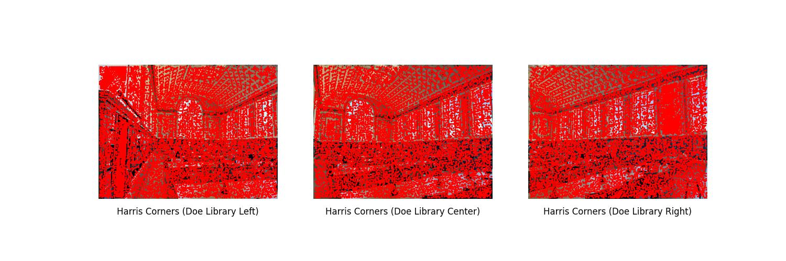
without ANMS
After implementing Adaptive Non-Maximal Suppression (ANMS), these are the suppressed number of Harris corner points found on the Doe Library image set:
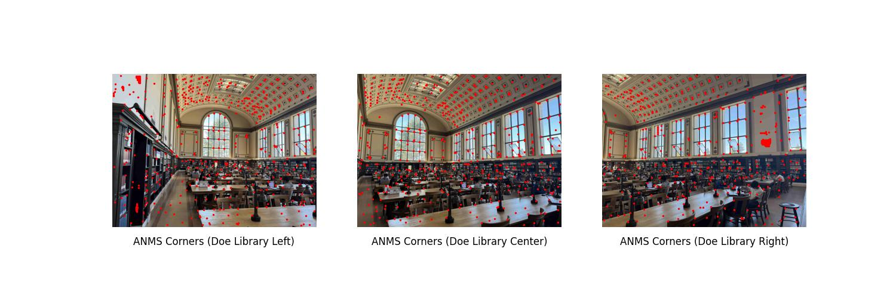
with ANMS
B.2: Feature Descriptor Extraction
Using the suppressed Harris corner points, I implemented Feature Descriptor extraction method to extract \(8 \times 8\) feature descriptors. Here are 7 extracted features on the Doe Library image set:
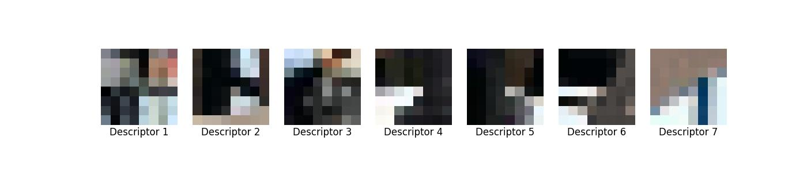
Doe Library (Center)
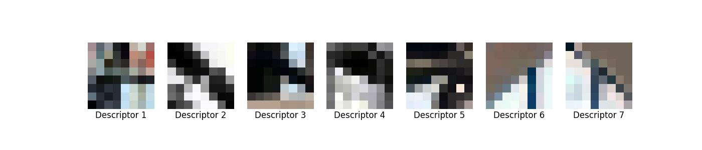
Doe Library (Left)
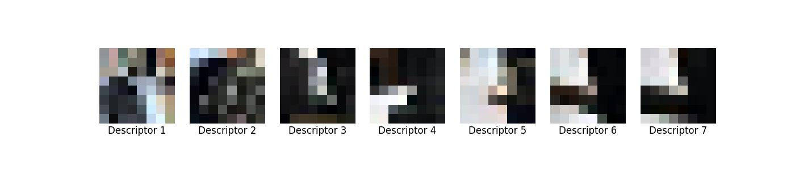
Doe Library (Right)
B.3: Feature Matching
Now being able to extract the feature descriptors in the images, for the left and right images, we will find the pairs that look most similar (feature similarlity was computed using Euclidean distance) to the center image. The matches were then filtered with Lowe’s ratio test. The Feature Matching method I implemented produced these results:
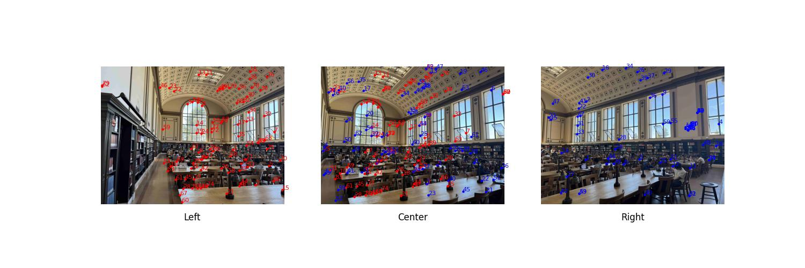
Left + Center matches (Red), Center + Right matches (Blue)
B.4: RANSAC for Robust Homography
We can reduce the number of matches to only consider the best ones (inliers) via Random Sample Consensus (RANSAC). Implementing the algorithm as described in class, we get:
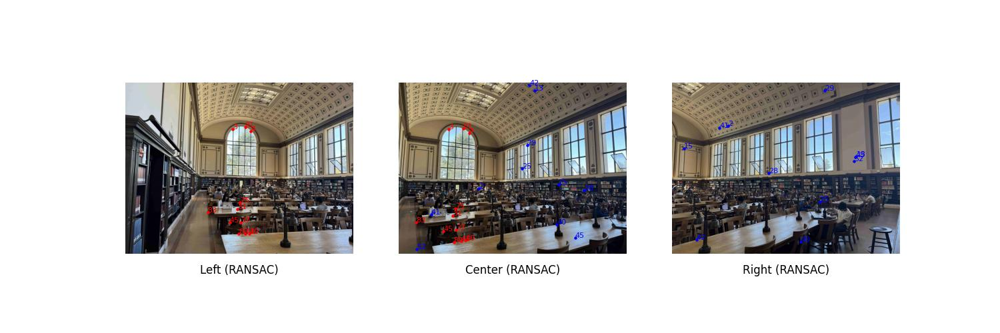
Left + Center inliers (Red), Center + Right inliers (Blue)
RANSAC was able to successfully remove outlier correspondences.
Putting parts B.1 to B.4 together, we can now adapting my code from part A.4 produce mosaics with automatic stitching. Here are the comparisons between manual and automatic stitched results:
Doe Library
Manually stitched
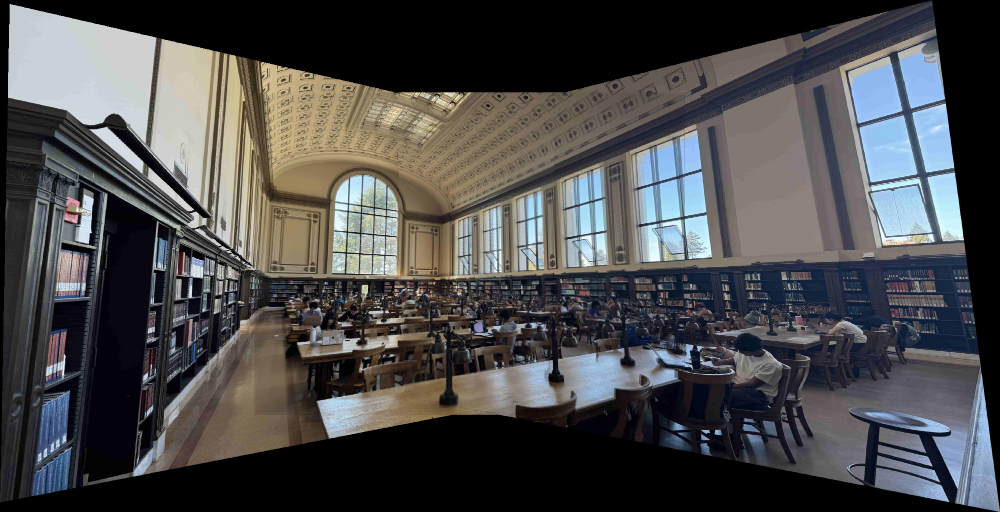
Automatically stitched
Gilman Hall
Manually stitched
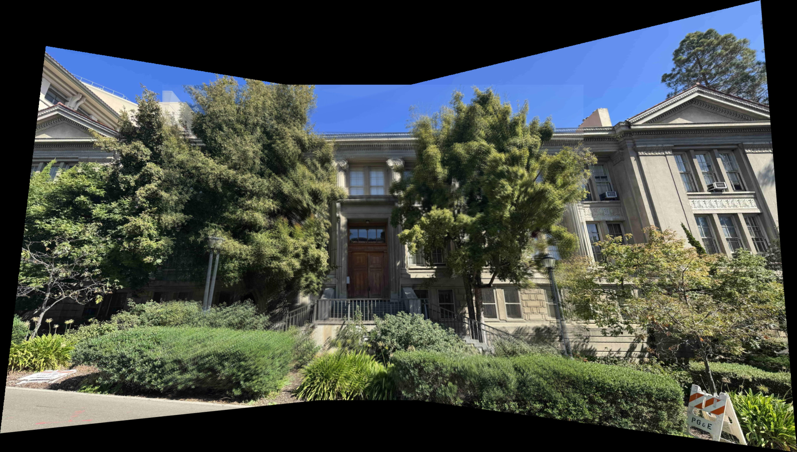
Automatically stitched
Strawberry Creek
Manually stitched
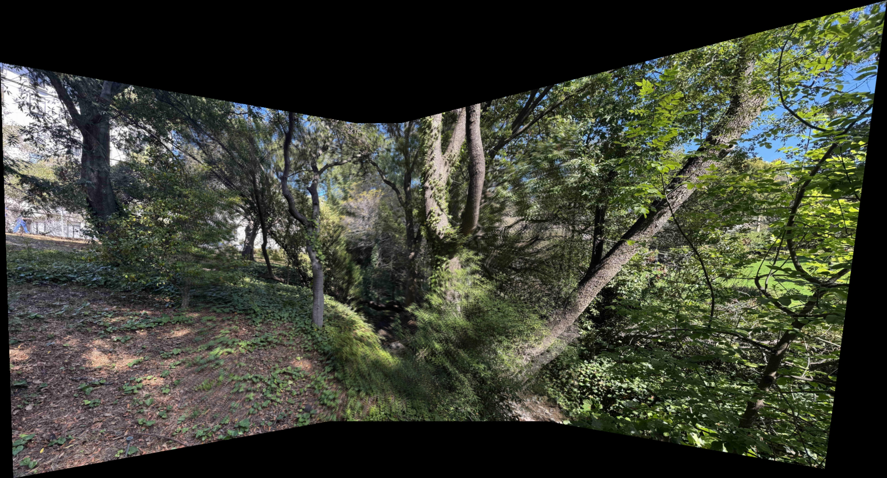
Automatically stitched
The results seem similar albeit some ghosting, but the automatic stitching saved a lot of time and strain not having to manually choose the correspondences everytime.